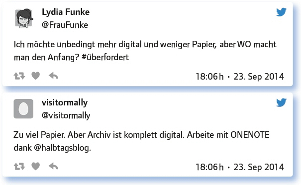
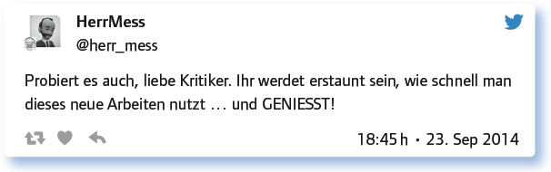

von Alicia Bankhofer
Wird der Traum von einer papierlosen Schultasche für alle je in Erfüllung gehen? Spätestens seit 2010, als mit der Einführung des iPads Tablet-PCs erstmals tägliche Arbeitswerkzeuge für Millionen von Menschen in verschiedenen Branchen wurden, stiegen die Bemühungen im Bildungsbereich, analoge Drucksorten mit digitalen Medien und papierlosen Tools zu ersetzen. Trotz immer schlanker und schneller werdenden Netbooks, Laptops und Tablets erweist es sich für viele noch als leichter gesagt als getan.
In diesem #EDchatDE teilt die Community ihre Erfahrungen mit papierlosen Workflows und gibt Tipps für Anfängerinnen und Anfänger.
Was in deiner Schultasche ist noch aus Papier, was ist schon digital? Und wie sieht das in 10 Jahren aus?
Die Teilgeber/innen sehen bei sich durchaus noch Entwicklungspotenzial in Richtung Digitalisierung.

Warum ist Deutschland im Vergleich mit anderen Ländern so zögerlich, was die Digitalisierung des Lernens und Lehrens betrifft?
Dafür kamen unterschiedliche Begründungen. Einerseits wurde z. B. vermutet, dass bei den Schulbuchverlagen, den Kultusbehörden und Schulträgern zu wenig auf Digitalisierung gesetzt wird, andererseits wurde eine mangelnde Medienkompetenz bei Lehrern beklagt.
„Deutschland – das Land der Dichter und Denker“ … und die tief verwurzelte Vorstellung, man könne nur auf Papier dichten und denken.
Zu wenige Investitionen im EU-Durchschnitt im Bereich Bildung?
Weil die Datenschutzgesetze hier ziemlich strikt sind und man als Lehrer im Dunklen steht, was recht ist und was nicht.
Die Schulbuchverlage mauern (haben gemauert), die Kultusbehörden scheuen Kosten, die Schulträger ebenso.
Unklar, wie man www sinnvoll nutzen kann. Die meisten haben Angst, dass SuS es missbrauchen oder sie es nicht verstehen.
Das „Land der Ideen“ ist digital-didaktisch ideenlos.
Ich würde einmal vorsichtig spekulieren: mangelnde Medienkompetenz in deutschen Lehrerzimmern?
Papierlos = digital. Ist Datenschutz schlechter als früher mit Lehrerkalender, der in der Pause auf dem Pult liegt?
Die Möglichkeiten des Datenschutzes wurden im digitalen Bereich von fast allen Teilgebern als besser eingeschätzt. Allerdings kamen auch Hinweise, dass personenbezogene Daten besonders geschützt werden müssen.
Nicht schlechter, eher besser. Aber: Wenn Daten in falsche Hände gelangen oder leaken, können sie schneller verbreitet werden.
Digitaler Datenklau kann in ganz anderem Maße erfolgen, wie z. B.: Schüler schauen sich temporär den Kalender eines Lehrers an.
Passwort = Vorhängeschloss, Verschlüsselung = Geheimsprache. So einen Papierkalender hab ich noch nicht gesehen …
Meine Noten im Tablet sind doppelt geschützt – der Kalender gar nicht.
Im digitalen Zeitalter muss man (mehr denn je) wissen, was man mit (seinen) Daten macht.
Datenschutz betrifft ja nicht nur Noten, sondern personenbezogene Daten. Risiko steigt mit zunehmender Digitalisierung erheblich.
Schutz der Privatsphäre wird in Deutschland durch Transparenzphobie begründet.
Welche Vorteile bietet das papierlose, digitale Arbeiten? Konkrete Tipps! Welche APP für was? Links mögen wir hier besonders.
Als positiv wurde genannt, dass Digitalisierung zu einer besseren Ordnung und Übersicht führt und Arbeitsabläufe schneller zu organisieren sind. Die Teilgeber nannten einige Beispiele für Apps, die sie verwenden.
Ich verliere endlich keine Zettel mehr, habe meine Materialien immer und überall im Zugriff, kann mit anderen zusammenarbeiten etc.
Weniger Aktenordner, in denen ich bestimmte Folien, Tafelbilder suchen muss.
Ich finde es genial, wenn ich z. B. im Blog Links zum Anschauen als Hausi posten kann.
Recherchetool für Lehrer und Schüler, Wikilinks (Nur iOs): http://t.co/ekiyKP5Gel
Vorteil: Ich finde alles schneller und die Vorbereitung geht rascher. Alle Notizen sind an einem Ort.
Ich kann Kollegenwünsche nach Arbeitsmaterial von mir SOFORT über Teilenfunktion und E-Mail erfüllen.
Evernote, Explain Everything, Etherpad, Wikis, Blogs, GoogleDocs, iCloud Apps, YouTube.
Doodle für Terminabsprachen, Buchbestellungen, Theaterorganisation und für den Klassenkassier.
Kollegen schreiben Konferenzprotokolle per Hand und tippen sie dann. Meine gehen nach kurzer Überarbeitung sofort raus.
Was forderst du von Bildungsmedien-Verlagen, Ländern und Politik, damit es mit dem „papierlos“ richtig klappt?
Auf der Wunschliste stehen besonders digitale Schulbücher und handhabbare Datenschutzlösungen.
Publishers: Don’t even plan school books on paper in the future – make sensible e-books.
Ich erwarte sichere und handhabbare Datenschutzlösung … und bezahlbar soll sie auch sein.
Digitale Schulbücher für mehr als ein Gerät. Nutzung in verschiedenen Umgebungen (IOS, Windows, Android, Linux).
Politik: Geld für WLAN in den Schulen, sonst ist papierlos witzlos.
Vorbereitung der LuL sowie SuS auf diese Entwicklung.
Schulbuchverlage: Alle Möglichkeiten digitaler Medien nutzen, nicht nur Schulbuchseiten einscannen.
Most important for successful & effective digital technology use is the right pedagogy.
Multimediale Schulbücher mit einem wirklichen Mehrwert, nicht nur eBooks.
Enger fachlicher und wissenschaftlicher Austausch zwischen Schulen und Hochschulen.
Bildungspolitiker zu Unterrichtshospitationen einladen.
Von Verlagen und Ministerien fordere ich inzwischen gar nichts mehr, nur noch von SuS, die sich Sorgen um ihre Zukunft machen.
Welche Anregungen, Fragen hast du sonst noch zum Thema „Papierlose Schultasche für Anfänger?“
Auch hier kamen einige Hinweise:

Fazit:
Viele Lehrende im deutschen Sprachraum nutzen bereits papierlose Formate in ihrer Unterrichtsplanung, Vorbereitung und in ihrer allgemeinen Organisation von Lehrinhalten. Allerdings bleibt noch viel zu tun. Lehrende fordern digitale Lehrbücher und mehr freie Bildungsressourcen, Hardware und Infrastruktur an den Schulstandorten sowie didaktische Konzepte die digitale Workflows erleichtern. Wir sind gespannt, wie die Situation in zehn Jahren aussehen wird!
Weiterführende Links:
ZUM-WIki zum Thema „papierlose Schultasche“: https://wiki.zum.de/wiki/Papierlose_Schultasche
Lehrer-Workflow – die papierfreie Schultasche: http://lernwolke.de/2010/03/11/lehrer-workflow-die-papierfreie-schultasche/
Link zum vollständigen Protokoll: